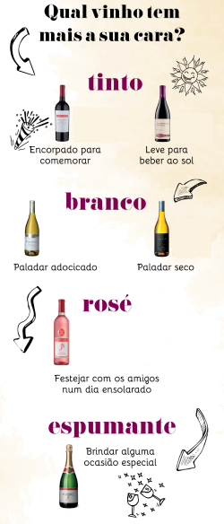
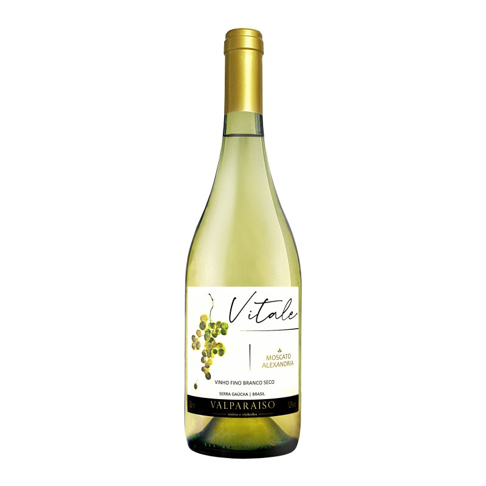
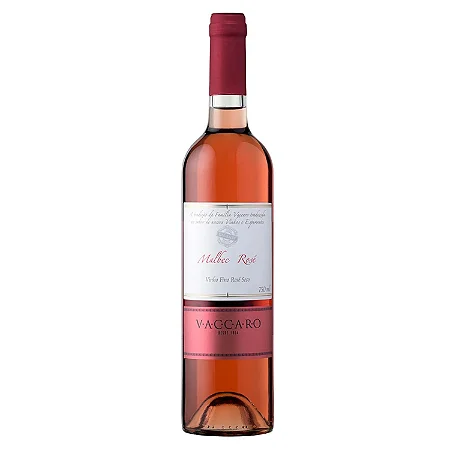

Sobre os vinhos existentes na Agnello
Vinho Tinto

Sobre o vinho tinto: Vinho tinto é um tipo de vinho feito principalmente a partir de uvas tintas fermentadas. A cor pode variar de vermelho intenso a marrom, dependendo da uva e do tempo de envelhecimento. Geralmente possui sabores ricos e pode ter notas de frutas vermelhas, especiarias e madeira.
Vinho Branco
Sobre o vinho branco: As principais características do vinho branco são sua coloração dourada e o sabor com notas de frutas. Essas particularidades fazem com que ele seja bem recebido até mesmo por quem não tem o paladar aguçado para os diferentes tipos de vinhos.
Vinho Espumante

Sobre o Vinho Espumante: Vinho espumante é um tipo de vinho que contém bolhas de gás carbônico, resultando em uma textura efervescente. É frequentemente associado a celebrações e pode variar de muito doce a muito seco.
Vinho Rose
Sobre o vinho rose: Leve, refrescante e versátil são palavras certeiras para definir o vinho rosé, meio-termo entre tinto e branco cada vez mais presente nas prateleiras e adegas.